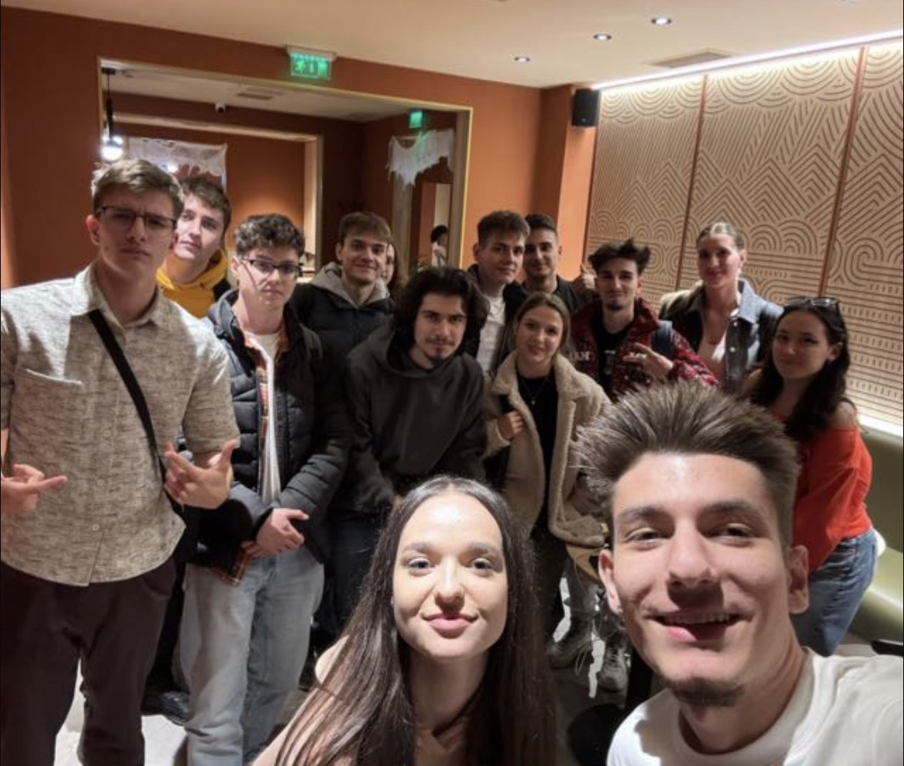

Cine Suntem noi?

Echipa Cyber Warriors este formată din 15 studenți și viitori membri SiSC, toți aparținând Facultății de Cibernetică, Statistică și Informatică Economică din cadrul ASE București. Suntem o echipă unită, pasionată de tehnologie, inovație și evenimente studențești, care își propune să aducă un plus de energie și creativitate în comunitatea ASE.